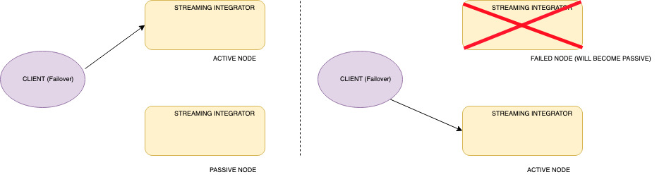

Minimum High Availability (HA) Deployment¶
The minimum high availability deployment mainly focuses on providing high availability that ensures the prevention of data loss if the system suffers a failure due to one or more unforeseeable reasons. One of the main adavantages of this deployment pattern is that it uses minimum amount of infrastructure resources possible. Thus deployment pattern is run with only two Streaming integration servers.
In the minimum HA setup, one node is assigned as the active node while the other node is assigned as the passive node. Only the active node processes the incoming events and publishes the outgoing events. Internally, the active node publishes the events to the passive node, but the passive node does not process or send any events outside as mentioned earlier. In a scenario where the active node fails, the passive node is activated. Then the passive node starts receiving events and then publishing them from where the active node left off. Once the terminated (previously active) node restarts , it operates in the passive state. In the passive node, sources are in an inactive mode where they do not receive events into the system.
Info
In the passive node, databridge ports and Siddhi Store Query API endpoint are closed, but the admin API are accessible.
For a two-node minimum HA cluster to work, only the active node should receive events. By design, you can only send events to the active node. To achieve this, you can use a load balancing mechanism that sends events in a failover manner as depicted in the diagram below.

Before you begin:
Before configuring a minimum HA cluster, you need to complete the following prerequisites:
- For each WSO2 SI instance, you need a CPU with four cores, and a total memory of 4GB. For more information, see Installing the Streaming Integrator in a Virtual Machine.
- Download and install two binary packs of WSO2 SI..
- Download, install and start a working RDBMS instance to be used for clustering the two nodes.
- Download the MySQL connector from here.
Extract and find the mysql-connector-java-5.*.*-bin.jar, and place it in the <SI_HOME>/lib directory of both nodes.
- In order to retrieve the state of the Siddhi Applications deployed in the system (in case of a scenario where both the
nodes fail), enable state persistence for both the nodes by specifying the same datasource/file location.
For detailed instructions, see Configuring Database and File System State Persistence.
- A client-side data publishing mechanism (such as a load balancer) that works in a failover manner must be available
to publish events to one of the available nodes (i.e., to the active node).
Configuring a minimum HA cluster¶
There are three main configurations that are required to setup a minimum HA cluster. They are as follows:
-
Cluster Configuration
-
Persistent configuration
-
HA configuration
Note
- The configurations given below need to be done in the
<SI_HOME>/conf/server/deployment.yamlfile for both the WSO2 SI nodes in the cluster. - If you need to run both SI instances in the same host, make sure that you do a port offset to change the default ports in one of the hosts. For more information about the default ports, see Configuring Default Ports.
To configure the HA cluster, follow the steps below:
-
For each node, enter a unique ID for the
idproperty under thewso2.carbonsection (e.g., id: wso2-si). This is used to identify each node within a cluster. -
To allow the two nodes to use same persistence storage, you need to configure RDBMS persistence configuration under
state.persistence. The following is a configuration for db-based file persistence.Info
This step covers persistent configuration. For this purpose, you can use MySQL, MSSQL, POSTGRES and Oracle database types. For more information about the supported database types, see Configuring Data Sources.
- state.persistence: enabled: true intervalInMin: 1 revisionsToKeep: 2 persistenceStore: org.wso2.carbon.stream.processor.core.persistence.DBPersistenceStore config: datasource: PERSISTENCE_DB # A datasource with this name should be defined in wso2.datasources namespace table: PERSISTENCE_TABLEThe datasource named
PERSISTENCE_DBin the above configuration can be defined in the<SI_HOME>/conf/server/deployment.yamlfile underwso2.datasources. The following is a sample datasource configuration.- name: PERSISTENCE_DB description: The MySQL datasource used for persistence jndiConfig: name: jdbc/PERSISTENCE_DB definition: type: RDBMS configuration: jdbcUrl: 'jdbc:mysql://localhost:3306/PERSISTENCE_DB?useSSL=false' username: root password: root driverClassName: com.mysql.jdbc.Driver maxPoolSize: 50 idleTimeout: 60000 connectionTestQuery: SELECT 1 validationTimeout: 30000 isAutoCommit: false -
To allow the two nodes in the cluster to coordinate effectively, configure carbon coordination by updating the
cluster.configsection of the<SI_HOME>/conf/server/deployment.yamlas follows:Info
This step covers cluster configuration.
a. To enable the cluster mode, set the
enabledproperty totrue.`enabled: true`b. In order to cluster the two nodes together, enter the same ID as the group ID for both nodes (e.g.,
groupId: group-1).c. Enter the ID of the class that defines the coordination strategy for the cluster (e.g.,
coordinationStrategyClass: org.wso2.carbon.cluster.coordinator.rdbms.RDBMSCoordinationStrategy).d. In the
strategyConfigsection, enter information as follows:-
datasource:Enter the name of the configured datasource shared by the nodes in the cluster as shown in the example below. Data handled by the cluster are persisted here.
The following is a sample datasource configuration for a MySQL datasource that should appear under the
dataSourcessubsection of thewso2.datasourcessection in the<SI_HOME>/conf/server/deployment.yamlfile.Sample MySQL datasource - name: WSO2_CLUSTER_DB description: The MySQL datasource used for Cluster Coordination jndiConfig: name: jdbc/WSO2ClusterDB definition: type: RDBMS configuration: jdbcUrl: 'jdbc:mysql://localhost:3306/WSO2_CLUSTER_DB?useSSL=false' username: root password: root driverClassName: com.mysql.jdbc.Driver maxPoolSize: 50 idleTimeout: 60000 connectionTestQuery: SELECT 1 validationTimeout: 30000 isAutoCommit: falseFor detailed instructions on how to configure a datasource, see Configuring Datasources.
-
heartbeatInterval:
Define the time interval (in milliseconds) at which the heartbeat pulse should occur for each node. Recommended value for it is 5000 milliseconds.
heartbeatMaxRetry:
Define the number of times to tghe system should retry to hear the heartbeat of the active node (that indicates that the node is alive) before the passive node becomes active. The recommended value is five times.
eventPollingInterval:
Define the time interval (in milliseconds) at which each node should listen for changes that occur in the cluster. Recommended value for it is 5000 milliseconds.
The following is a sample cluster configuration.
- cluster.config: enabled: true groupId: si coordinationStrategyClass: org.wso2.carbon.cluster.coordinator.rdbms.RDBMSCoordinationStrategy strategyConfig: datasource: WSO2_CLUSTER_DB heartbeatInterval: 5000 heartbeatMaxRetry: 5 eventPollingInterval: 5000 -
-
Next, add the
deployment.configsection to the<SI_HOME>/conf/server/deployment.yamlfile with the following configurations. (HA configuration)Info
This step covers HA configuration.
-
type: To enable two-node minimum HA, set the type property toha. -
passiveNodeDetailsWaitTimeOutMillis: The time duration (in miliseconds) to wait until the details of the passive node are available in the database so that the active node can retrieve them. Once this time duration elapses, a timeout occurs and the system sleeps for a time duration specified via thepassiveNodeDetailsRetrySleepTimeMillisparameter. -
passiveNodeDetailsRetrySleepTimeMillis: The time duration (in milliseconds) to sleep before retying to retrieve details of the passive node again. This applies when the system has timed out after an attempt to retrieve these details. -
eventByteBufferQueueCapacity: The size of the queue that is used to keep events in the passive node. -
byteBufferExtractorThreadPoolSize: The number of worker threads that read events from the queue in the passive node. -
To configure the TCP server via which event synchronization is carried out from the active node to the passive node, add a subsection named
eventSyncServerand enter information as follows:-
host: The hostname of the server in which the TCP server is spawned. -
port: The number of the port in which the TCP server is run. -
advertisedHost: This is specified when the host can be different from the actual server host. -
advertisedPort: This is specified when the port can be different from the actual port of the server. -
bossThreads: The number of boss threads to be allocated for the TCP server to handle the connections. The default value is10. -
workerThreads: The number of worker threads to be allocated for the TCP server to handle the connections. The default value is 10.
-
-
. To configure the TCP client via which requests are sent to the SI cluster, add a subsection named
eventSyncClientPooland add information as follows:-
maxActive: The maximum number of active connections that must be allowed in the TCP client pool. The default value is10. -
maxTotal: The maximum number of total connections that must be allowed in the TCP client pool. The default value is10. -
maxIdle: The maximum number of idle connections that must be allowed in the TCP client pool. The default value is10. -
maxWait: The maximum amount of time (in milliseconds) that the client pool must wait for an idle object in the connection pool. The default value is6000. -
minEvictableIdleTimeInMillis: The minimum number of milliseconds that an object can sit idle in the pool before it is eligible for eviction. The default value is120000.
Info
In a container environment, you can use an advertised host and an advertised port to avoid exposing the actual host and port.
-
The following is sample HA configuration.
``` - deployment.config: type: ha passiveNodeDetailsWaitTimeOutMillis: 300000 passiveNodeDetailsRetrySleepTimeMillis: 500 eventByteBufferQueueCapacity: 20000 byteBufferExtractorThreadPoolSize: 5 eventSyncServer: host: localhost port: 9893 advertisedHost: localhost advertisedPort: 9893 bossThreads: 10 workerThreads: 10 eventSyncClientPool: maxActive: 10 maxTotal: 10 maxIdle: 10 maxWait: 60000 minEvictableIdleTimeMillis: 120000 ``` -
Starting the cluster¶
To start the minimum HA cluster you configured, follow the steps below:
-
Save the required Siddhi applications in the
<SI_HOME>/wso2/server/deployment/siddhi-filesdirectory of both nodes. In order to ensure that the Siddhi applications are completely synchronized between the active and the passive node, they must be added to thesiddhi-filesdirectory before the server startup. However, the synchronization can take place effectively even if the Siddhi applications are added while the server is running. -
Start both servers by navigating to the
<SI_HOME>/bindirectory and issuing one of the following commands (depending on your operating system:- For Windows:
server.bat - For Linux/Mac OS :
./server.sh
- For Windows:
If the cluster is correctly configured, the following CLI logs can be viewed without any error logs:
-
In the active node:
[2018-09-09 23:56:54,272] INFO {org.wso2.carbon.stream.processor.core.internal.ServiceComponent} - WSO2 Streaming Integrator Starting in Two Node Minimum HA Deployment [2018-09-09 23:56:54,294] INFO {org.wso2.carbon.stream.processor.core.ha.HAManager} - HA Deployment: Starting up as Active Node -
In the passive node:
[2018-09-09 23:58:44,178] INFO {org.wso2.carbon.stream.processor.core.internal.ServiceComponent} - WSO2 Streaming Integrator Starting in Two Node Minimum HA Deployment [2018-09-09 23:58:44,199] INFO {org.wso2.carbon.stream.processor.core.ha.HAManager} - HA Deployment: Starting up as Passive Node
Info
When deploying Siddhi applications in a two node minimum HA cluster, it is recommended to use a content
synchronization mechanism since Siddhi applications must be deployed to both server nodes. You can use a common
shared file system such as Network File System (NFS).
You need to mount the <SI_HOME>/wso2/server/deployment/siddhi-files directory of the two nodes to the shared file system.
Info
To start two WSO2 SI Nodes in the same machine, <SI_HOME>/conf/server/deployment.yaml file -> wso2.transport.http namespace -> listenerConfigurations section must be updated
to listen to different ports. The offset property in the <SI_HOME>/conf/server/deployment.yaml -> wso2.carbon section section -> ports subsection should also
be changed in one SI instance to avoid conflicts when starting both servers.